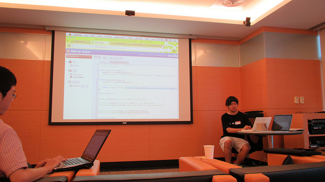

5/20 的「Firefox 附加元件開發入門班」圓滿結束，講師小 B 有條有理地介紹了 Firefox 附加元件開發的利器「Add-on SDK」，並且也分享了許多開發小技巧。課程的投影片在網路上可以直接閱讀，下面我們來看看現場的狀況：

小 B 正在介紹 Add-on SDK
大家很努力地用 SDK 開發套件中，也討論彼此遇到的問題 
參加者小Q 發表他所做的「政大專用套件」，最後也獲得實作紀念獎！
這次參與的學員都非常認真，而對課程內容也給予平均高達 9.36 的高分（滿分為 10），真是感謝各位的參與！其中小 Q 的套件已經通過初步審核，在附加元件網站上架了，政大的學生可以玩玩看。
錯過了這次的附加元件開發入門班嗎？別擔心，只要緊盯 Mozilla Taiwan 的 Facebook 粉絲頁或 G+ 專頁，下次就不會再錯過這種好康訊息啦！